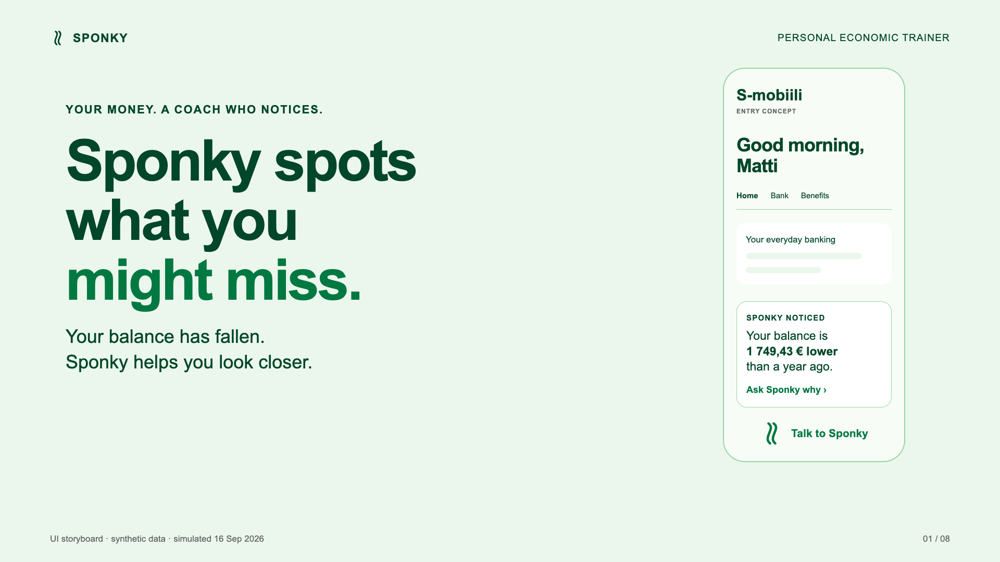
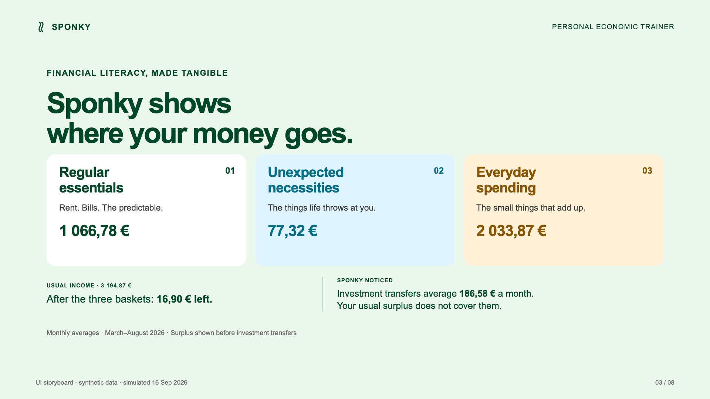
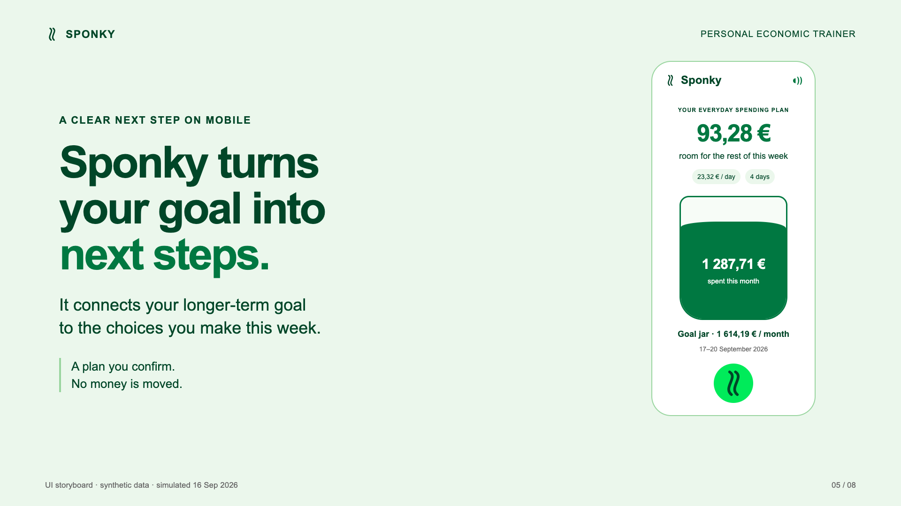
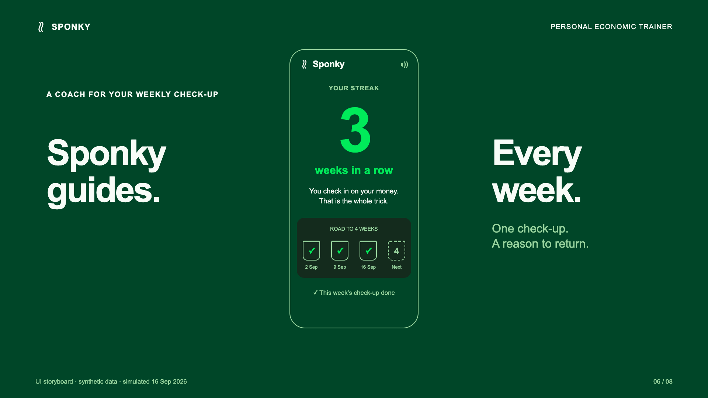
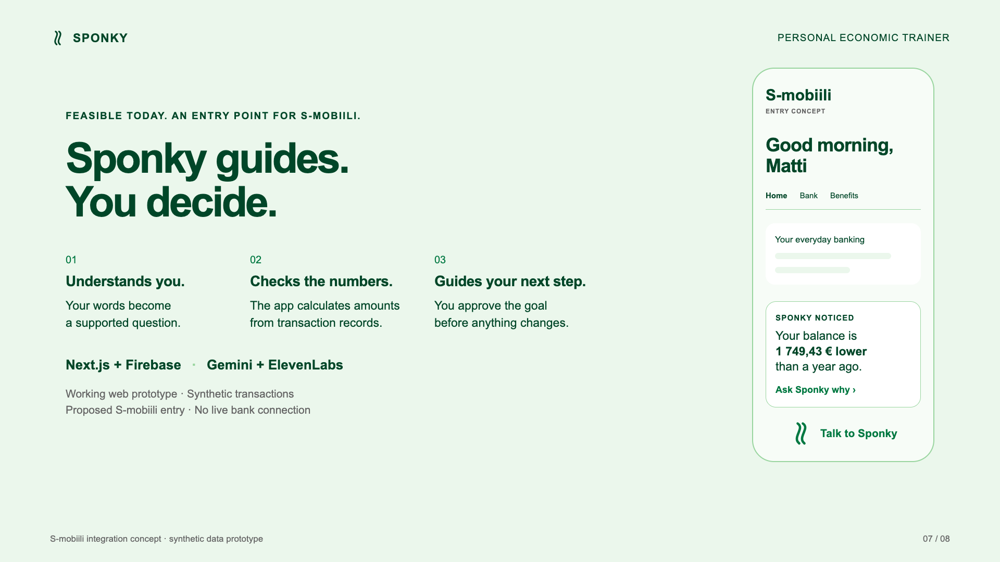
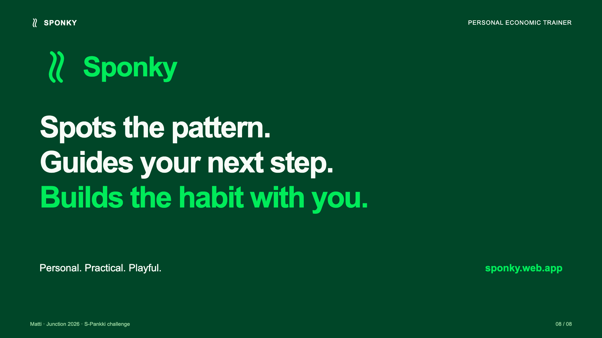

Sponky · pitch frame review
Eight static 16:9 frames for a 1:55 pitch. Sponky leads the story: notices → explains → checks → guides → celebrates. The user chooses and confirms the goal. The notes below each image are for review only.
UI illustrations are storyboard samples, not captured app screens. Financial examples use the planned CUST04060 demo figures. Replace or verify each UI scene against the final integrated app before submission.
The five judging criteria · 20% each
| Financial literacy | 03 · Three baskets; 04 · goal trade-offs; 06 · weekly reflection |
|---|---|
| Originality of AI integration | 01 · Sponky notices; 02 · guided exploration; 03 · proactive signal; 04 · personal history |
| Clarity of mobile UX | 02 · one answer; 05 · visual jar; 06 · focused check-up |
| Feasibility | 07 · validated operations, application calculations, explicit confirmation |
| Potential to integrate into S-mobiili | 01 + 07 · proposed banking-app entry and embeddable web prototype |
Sponky starts the discovery
0:00–0:10
Judging criteria: Mobile UX · S-mobiili potential
Voice: Sponky spots a change in your money and gives you a way to explore it.
Review note: Open with Sponky surfacing an observed balance change and inviting exploration. This is an in-app insight, not a background notification. The bank entry is a concept, not a live S-mobiili integration.


Sponky guides the exploration
0:10–0:24
Judging criteria: AI integration · Mobile UX
Voice: Ask in your own words. Sponky explains the pattern and offers a way to explore it.
Review note: Use actual voice footage here in the final video. The illustrated response uses the August 2026 demo targets.

Sponky makes the spending understandable
0:24–0:42
Judging criteria: Financial literacy · AI integration
Voice: Sponky explains your three baskets, then spots the gap between your surplus and investments.
Review note: The 16,90 € surplus is before investment transfers. The 186,58 € investment comparison is an observed monthly pattern, not evidence of savings achieved.


Sponky checks what the goal takes
0:42–1:00
Judging criteria: AI integration · Financial literacy
Voice: Sponky checks your goal against your history and shows the change it would take.
Review note: The six-month target keeps the recorded investment allocation. Only explicit confirmation sets the goal.

Sponky turns the goal into next steps
1:00–1:15
Judging criteria: Mobile UX · Financial literacy
Voice: Once you confirm, Sponky turns your goal into a spending plan for the week.
Review note: 93,28 € is the jar-based allowance for 17–20 September, excluding the simulated current day. It is not a verified bank balance or a guarantee about future bills.


Sponky guides and celebrates the check-up
1:15–1:36
Judging criteria: Financial literacy · Mobile UX
Voice: Sponky guides your weekly check-up and celebrates each time you show up.
Review note: Illustrates three completed weekly check-ups on 2, 9 and 16 September. The dedicated streak screen is planned in #51 and remains to be verified in the integrated product. Do not imply measured retention or savings impact.


Sponky guides. The user decides.
1:36–1:48
Judging criteria: Feasibility · S-mobiili potential
Voice: Sponky guides the conversation with checked numbers. You stay in control of the goal.
Review note: Architecture and providers reflect the project. S-mobiili embedding remains a proposed integration. The new coaching flow still requires combined acceptance under #50.


The promise to remember
1:48–1:55
Judging criteria: All five criteria: concise closing
Voice: Sponky. Spots the pattern. Guides your next step. Builds the habit with you.
Review note: Close on the product promise and demo address. Do not claim proven improvements in financial literacy; this prototype demonstrates the approach.